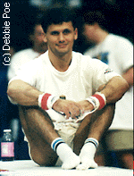

Zoltan Supola (HUN)
1992 European PB
Champion
1994
World HB Silver Medalist

Medal Total
- World Championships: 1
Silver, 1 Bronze
- European Championships: 1
Gold, 1 Silver, 1 Bronze
Supola was born on September 25, 1970. He
was coached by Peter Kovacs at the Dunafer Gymnastics Club. He's a
performer with Cirque du Soleil's "O" show in Las Vegas.
Competition Results
- 1986
- Jr. European Championships: 27th AA
Jr. Friendship Tournament (Druzhba): 6th Team, 3rd PH, 5th HB
- Jr. Medico Cup: 2nd AA, 7th HB
1987
Jr. Friendship Tournament (Druzhba): 5th Team, 3rd HB
-
- 1988
- Jr. European Championships: 12th AA
Jr. Friendship Tournament (Druzhba): 3rd Team, 14th AA, 7th V
-
- 1989
- DTB Cup: 16th AA, 3rd HB
- Gander Memorial: 9th AA
- Swiss Cup: 4th AA
-
- 1990
- Blume Memorial: 6th AA
- China Cup: 9th AA
- GER-USSR-HUN Tri-Meet: 7th AA
- Medico Cup: 9th AA
-
- 1991
- Blume Memorial: 9th AA
- DTB Cup: 5th AA
- European Cup: 7th AA, 1st V, 2nd HB
- Gander Memorial: 1st AA
HUN Championships: 1st AA
HUN Masters Tournament: 1st AA
- International Hungarian Championships: 6th AA
- Moscow World Stars: 8th AA
- Rome Grand Prix: 7th AA
- World Championships: 18th AA, 5th HB
- World Sports Fair: 5th AA
-
- 1992
- Cottbus International: 4th AA, 1st V, 2nd PH, 3rd FX, 3rd
PB, 5th R, 5th HB
- DTB Cup: 9th AA, 2nd HB, 3rd FX, 3rd V, 4th R, 5th PB, 6th
PH
- European Championships: 2nd AA, 1st PB, 3rd V,
6th PH, 7th R
- Gander Memorial: 7th AA
- GER-HUN Dual Meet: 2nd AA
- HUN Championships: 1st AA, 1st FX, 1st R, 1st PB, 1st HB
- HUN-GBR Dual Meet: 1st AA
HUN Masters Tournament: 1st AA
- International Hungarian Championships: 1st AA, 1st FX, 1st
PH, 1st R, 1st HB
- Medico Cup: 1st AA
- Messe Cup: 2nd AA
- Olympic Games: 12th AA, 5th V
- World Championships: 4th PB, 7th R
-
- 1993
- American Cup: 7th AA
- Cottbus International: 4th AA, 2nd HB, 3rd V, 3rd PH
- DTB Cup: 3rd HB, 5th PH, 7th V
- European Cup: 14th AA, 2nd V
- Gander Memorial: 6th AA
HUN Championships: 1st AA
- Ljubljana International: 1st AA, 1st V, 1st
PB,
- Swiss Cup: 8th AA
- University Games: 6th AA
- World Championships: 13th AA, 3rd HB
-
- 1994
- American Cup: 8th AA
- Birmingham Classic: 5th AA
- DTB Cup: 5th HB
- European Championships: 8th AA, 4th HB, 5th V, 8th PB
HUN Championships: 1st AA
HUN Masters Tournament: 1st AA
- International Mixed Pairs: 7th Team
- Swiss Cup: 8th Team
- World Championships (Brisbane): 9th AA, 2nd HB
- World Championships (Dortmund): 13th Team (prelims)
-
- 1995
- Cottbus International: 7th HB
- DTB Cup: 6th V, 8th HB
HUN Championships: 1st AA
HUN Masters Tournament: 1st AA
- International Hungarian Championships: 1st AA
- Ostrava International: 5th AA
- World Championships: 16th AA
-
- 1996
- Cottbus International: 7th PH
- European Championships: 6th AA, 6th PH, 7th V, 7th HB
HUN Championships: 1st AA
HUN Masters Tournament: 1st AA
- Olympic Games: 22nd AA
- Swiss Cup: 5th V, 5th HB
- World Championships: 7th HB, 9th V
-
- 1997
- Cottbus International: 5th FX, 7th V, 7th HB
HUN Championships: 1st AA
HUN Masters Tournament: 1st AA
- International Hungarian Championships: 4th AA
- University Games: 8th Team, 10th AA, 7th PH
- World Championships: 10th Team, 21st AA, 6th
PH
1998
European Championships: 5th PH, 5th HB
HUN Masters Tournament: 1st AA
1999
HUN Championships: 1st AA
HUN Masters Tournament: 1st AA
World Championships: 20th AA
2000
DTB Cup: 5th HB, 8th PH
European Championships: 7th HB
Gander Memorial: 7th AA
HUN Championships: 1st AA
HUN Masters Tournament: 1st AA
Ljubljana International: 3rd PH, 5th HB
Olympic Games: 72nd AA (prelims), 6th PH
Pre-Olympics: 8th AA
RCA Gymnastics Challenge: 6th AA
World Cup: 4th PH, 6th HB
2001
Cottbus Grand Prix: 7th PH
French International: 8th PH
- This page was created on April 19, 1997 and was last
updated on September 16, 2005.
© Gymn Forum